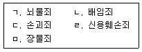
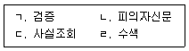
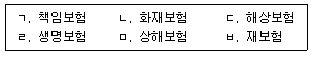
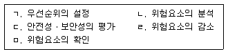
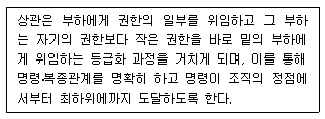
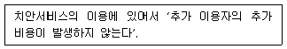
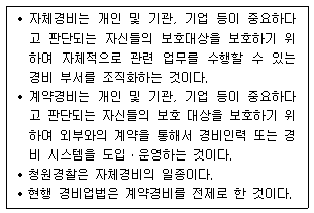
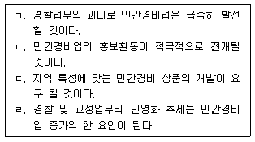

경비지도사-1차(법학개론,민간경비론) (2015-11-21 기출문제)
1과목: 법학개론
1. 법과 도덕의 차이점에 관한 설명으로 옳지 않은 것은?
- 법은 강제성이 있지만 도덕은 강제성이 없다.
- 법은 타율성을 갖지만 도덕은 자율성을 갖는다.
- 법은 내면성을 갖지만 도덕은 외면성을 갖는다.
- 법은 양면성을 갖지만 도덕은 일면성을 갖는다.
(정답률: 68%)

2. 법의 효력에 관한 설명으로 옳지 않은 것은?
- 법률의 시행기간은 시행일부터 폐지일까지이다.
- 법률은 특별한 규정이 없는 한 공포일로부터 30일을 경과하면 효력이 발생한다.
- 범죄 후 법률의 변경이 피고인에게 유리한 경우에는 소급적용이 허용된다.
- 외국에서 범죄를 저지른 한국인에게 우리나라 형법이 적용되는 것은 속인주의에 따른 것이다.
(정답률: 74%)
3. 법의 체계에 관한 설명으로 옳은 것은?
- 강행법과 임의법은 실정성 여부에 따른 구분이다.
- 고유법과 계수법은 적용대상에 따른 구분이다.
- 일반법과 특별법은 적용되는 효력 범위에 따른 구분이다.
- 공법과 사법으로 분류하는 것은 영미법계의 특징이다.
(정답률: 54%)
4. 사회법에 관한 설명으로 옳지 않은 것은?
- 공법영역에 사법적 요소를 가미하는 제3의 법영역이다.
- 노동법, 경제법, 사회보장법은 사회법에 속한다.
- 자본주의의 부분적 모순을 수정하기 위한 법이다.
- 사회적ㆍ경제적 약자의 이익 보호를 목적으로 한다.
(정답률: 55%)
5. 법의 적용에 관한 설명으로 옳지 않은 것은?
- 법을 적용하기 위한 사실의 확정은 증거에 의한다.
- 확정의 대상인 사실이란 자연적으로 인식한 현상 자체를 말한다.
- 사실의 추정은 확정되지 못한 사실을 그대로 가정하여 법률효과를 발생시키는 것이다.
- 간주는 법이 의제한 효과를 반증에 의해 번복할 수 없다.
(정답률: 61%)
6. 법의 효력에 관한 설명으로 옳지 않은 것은?
- 민법은 특별한 규정이 있는 경우 외에는 법률불소급의 원칙이 적용된다.
- 소급법률에 의한 참정권 제한 금지는 헌법에 규정되어 있다.
- 법이 효력을 가지려면 실효성과 타당성이 동시에 있어야 한다.
- 하위 법규범으로 상위 법규범을 개폐할 수 없다.
(정답률: 48%)
7. 권리의 주체와 분리하여 양도할 수 없는 권리는?
- 실용신안권
- 초상권
- 법정지상권
- 분묘기지권
(정답률: 62%)
8. 권리에 관한 설명으로 옳지 않은 것은?
- 인격권은 권리자 자신을 객체로 하는 권리이다.
- 사원권은 단체의 구성원이 그 구성원의 지위에서 단체에 대하여 가지는 권리이다.
- 형성권은 권리자의 일방적 의사표시에 의해 권리변동의 효과가 발생하는 권리이다.
- 지배권은 배타적 지배를 하면서 타인의 청구를 거절할 수 있는 권리이다.
(정답률: 56%)
9. 권리와 구별되는 개념에 관한 설명으로 옳은 것은?
- 의사무능력자는 권능의 주체가 될 수 있다.
- 법규정에 의해 인정되는 반사적 이익은 권리가 될 수 있다.
- 권원은 그 작용에 따라 지배권, 청구권, 형성권, 항변권으로 분류된다.
- 권한은 일정한 법률적 또는 사실적 행위를 정당화시키는 법률상의 원인을 말한다.
(정답률: 28%)
10. 우리나라 헌법의 기본질서에 해당하지 않는 것은?
- 사법국가적 기본질서
- 자유민주적 기본질서
- 사회적 시장경제질서
- 평화주의적 국제질서
(정답률: 51%)
11. 헌법상 기본권보장의 대전제가 되는 최고의 원리는?
- 생명권의 보호
- 근로3권의 보장
- 사유재산권의 보호
- 인간의 존엄과 가치
(정답률: 66%)
12. 헌법상 법인이 누릴 수 있는 권리에 해당하지 않는 것은?
- 결사의 자유
- 거주이전의 자유
- 프라이버시권
- 재판을 받을 권리
(정답률: 56%)
13. 헌법상 국회의원의 권리와 의무에 관한 설명으로 옳지 않은 것은?
- 법률이 정하는 직을 겸할 수 없다.
- 국가이익을 우선하여 양심에 따라 직무를 행한다.
- 현행범인이라도 회기 중에는 국회의 동의 없이 체포 또는 구금되지 아니한다.
- 국회에서 직무상 행한 발언과 표결에 관하여 국회 외에서 책임을 지지 아니한다.
(정답률: 62%)
14. 헌법재판소에 관한 설명으로 옳지 않은 것은?
- 포괄적인 재판권과 사법권을 가진다.
- 헌법 규정에 대하여는 위헌심판을 할 수 없다.
- 공권력의 행사 또는 불행사로 기본권을 침해받은 자는 헌법소원심판을 청구할수 있다.
- 법률이 헌법에 위반되는가의 여부는 재판의 전제가 되었을 때 법원은 직권 또는 당사자의 신청에 의해서 위헌법률심판을 제청한다.
(정답률: 40%)
15. 민법상 전형계약이 아닌 것은?
- 화해
- 경개
- 현상광고
- 종신정기금
(정답률: 37%)
16. 제한능력자의 법률행위에 관한 설명으로 옳지 않은 것은?
- 피성년후견인이 법정대리인의 동의를 얻어서 한 재산상 법률행위는 유효하다.
- 법정대리인이 대리한 피한정후견인의 재산상 법률행위는 유효하다.
- 법정대리인이 범위를 정하여 처분을 허락한 재산은 미성년자가 임의로 처분할 수 있다.
- 제한능력자가 속임수로써 자기를 능력자로 믿게 한 경우 그 법률행위를 취소할 수 없다.
(정답률: 29%)
17. 보증채무에 관한 설명으로 옳지 않은 것은?
- 주채무가 소멸하면 보증채무도 소멸한다.
- 보증채무는 주채무가 이행되지 않을 때 비로소 이행하게 된다.
- 채무를 변제한 보증인은 선의의 주채무자에 대해서는 구상권을 행사하지 못한다.
- 채권자가 보증인에 대하여 이행을 청구하였을 때, 보증인은 주채무자에게 먼저 청구할 것을 요구할 수 있다.
(정답률: 60%)
18. 경비계약에 관한 설명으로 옳지 않은 것은?
- 경비업자가 경비계약을 체결하는 상대방은 경비대상 시설의 소유자 또는 관리자이다.
- 경비업자는 경비계약상 채무를 선량한 관리자의 주의로 이행하여야 한다.
- 보수는 시기의 약정이 없으면 관습에 의하고, 관습이 없으면 경비업무를 종료한 후 지체없이 지급하여야 한다.
- 경비업무 도급인이 파산하면 경비업자는 경비계약을 해제하고 경비업무 도급인에게 손해배상을 청구할 수 있다.
(정답률: 52%)
19. 경비업자의 채무불이행책임이 발생하는 경우가 아닌 것은?
- 경비원의 부주의로 경비대상 시설이 파손된 경우
- 경비원이 업무수행 과정에서 과실로 제3자에게 부상을 입힌 경우
- 경비원이 업무수행 과정에서 근무태만으로 인하여 도난사고가 발생한 경우
- 경비원이 업무수행 과정에서 취득한 고객의 비밀을 누설하여 손해를 끼친 경우
(정답률: 42%)
20. 아파트 경비원이 근무 중 인근의 상가 건물에 화재가 난 것을 보고 달려가서 화재를 진압한 행위에 관한 설명으로 옳지 않은 것은?
- 경비업무의 범위를 벗어난 행위이기 때문에 경비원에게 화재를 진압할 법적의무가 없다.
- 경비원은 상가 건물주에게 이익이 되는 방법으로 화재를 진압해야 한다.
- 상가 건물주의 이익에 반하지만 공공의 이익을 위해 화재를 진압하다가 손해를 끼친 경우, 경비원은 과실이 없더라도 손해를 배상할 책임이 있다.
- 경비원이 상가 건물 임차인의 생명을 구하기 위해 화재를 진압하다가 발생한 손해는 고의나 중과실이 없으면 배상할 책임이 없다.
(정답률: 57%)
21. 경비업체 甲과 상가 건물의 건물주 乙이 경비계약을 체결한 경우, 경비원 A가 오토바이를 타고 순찰을 하던 중 부주의로 행인 B를 치어 상해를 입혔고 넘어진 오토바이로 인해 상가 건물의 화단이 훼손되었다. 甲과 A의 책임에 관한 설명으로 옳지 않은 것은?
- A는 乙에게 채무불이행에 기한 손해배상책임을 부담한다.
- B는 甲에게 사용자책임을 물어 직접 손해배상을 청구할 수 있다.
- B는 A에게 불법행위에 기한 손해배상을 청구할 수 있다.
- 甲은 A의 화단 훼손행위에 의한 손해를 乙에게 배상하여야 한다.
(정답률: 51%)
22. 물건을 배달하러 온 택배기사를 강도로 착각하여 폭행을 가한 경비원의 행위에 해당하는 것은?
- 정당방위
- 우연방위
- 오상방위
- 과잉방위
(정답률: 69%)
23. 형법상 재산에 대한 죄를 모두 고른 것은?

- ㄱ, ㄴ, ㄷ
- ㄱ, ㄷ, ㄹ
- ㄴ, ㄷ, ㅁ
- ㄴ, ㄹ, ㅁ
(정답률: 58%)
24. 우리나라의 형사소송법에 관한 설명으로 옳은 것은?
- 형법의 적용 및 실현을 목적으로 하는 실체법이다.
- 공판절차뿐만 아니라 수사절차도 규정하고 있다.
- 순수한 직권주의를 기본구조로 하고 있다.
- 형식적 진실발견, 적정절차의 원칙, 신속한 재판의 원칙을 지도이념으로 한다.
(정답률: 41%)
25. 법관이 불공평한 재판을 할 현저한 법정의 사유가 있을 때, 해당 법관을 그 재판에서 배제하는 제도는?
- 제척
- 기피
- 회피
- 포기
(정답률: 57%)
26. 형사소송법상 임의수사에 해당하는 경우를 모두 고른 것은?

- ㄱ, ㄴ
- ㄱ, ㄷ
- ㄴ, ㄷ
- ㄴ, ㄹ
(정답률: 47%)
27. 형사상 유죄의 확정판결에 중대한 사실오인이 있는 경우 판결을 받은 자의 이익을 위하여 판결의 부당함을 시정하는 비상구제절차는?
- 상소
- 재심
- 항고
- 비상상고
(정답률: 55%)
28. 면소의 판결을 하는 경우가 아닌 것은?
- 피고인에 대하여 재판권이 없는 때
- 공소시효가 완성되었을 때
- 범죄 후 법령개폐로 형이 폐지된 때
- 사면이 있은 때
(정답률: 52%)
29. 상사에 관한 법규범의 적용순서를 바르게 나열한 것은?
- 상법 - 상사자치법 - 상관습법 - 민법
- 상법 - 민법 - 상관습법 - 상사자치법
- 상사자치법 - 상법 - 민법 - 상관습법
- 상사자치법 - 상법 - 상관습법 - 민법
(정답률: 45%)
30. 주식회사 정관의 변태설립사항이 아닌 것은?
- 발기인의 성명과 주소
- 현물출자를 하는 자의 성명
- 회사성립 후에 양수할 것을 약정한 재산의 가격
- 회사가 부담할 설립비용
(정답률: 27%)
31. 주식회사에 관한 설명으로 옳지 않은 것은?
- 자본금은 특정 시점에서 회사가 보유하고 있는 재산의 현재가치로서 주식으로 균등하게 분할되어 있다.
- 무액면주식의 발행도 허용되며, 액면주식이 발행되는 경우 1주의 금액은 100원이상 균일하여야 한다.
- 주주는 주식의 인수가액을 한도로 출자의무를 부담할 뿐, 회사의 채무에 대하여 책임을 지지 않는다.
- 주권 발행 이후 주주는 자신의 주식을 자유롭게 양도 및 처분을 할 수 있다.
(정답률: 44%)
32. 상법상 손해보험에 해당하는 것은 모두 몇 개인가?

- 2개
- 3개
- 4개
- 5개
(정답률: 53%)
33. 통상임금에 관한 설명으로 옳지 않은 것은?
- 근로자에게 정기적, 일률적으로 소정 근로 또는 총근로에 대하여 지급하기로 정한 금액을 말한다.
- 근로자가 실제로 연장ㆍ야근ㆍ휴일근로를 제공하기 전에 미리 확정되어 있어야 한다.
- 해고예고수당, 법정수당, 연차유급휴가수당 및 평균임금의 최고한도 보장의 산정기초가 된다.
- 임금의 명칭이나 지급주기의 장단 등 형식적인 기준이 아니라 임금의 객관적 성질이 통상임금의 법적 요건을 충족하여야 한다.
(정답률: 54%)
34. 산업재해보상보험법상 업무상 재해가 인정되는 사고에 해당하지 않는 것은?
- 휴게시간 중 사업주의 지배관리하에 있다고 볼 수 있는 행위로 발생한 사고
- 사업주가 주관하거나 사업주의 지시에 따라 참여한 행사나 행사준비 중에 발생한 사고
- 사업주가 제공한 시설물 등을 이용하던 중 시설물의 결함이나 관리소홀로 발생한 사고
- 사업주의 지배관리하에 있지 않더라도 사업주가 제공한 교통수단을 이용하여 출퇴근 중에 발생한 사고
(정답률: 56%)
35. 사회보험법에 해당하지 않는 것은?
- 고용보험법
- 기초노령연금법
- 산업재해보상보험법
- 국민기초생활보장법
(정답률: 55%)
36. 국민연금법상 국민연금의 특성으로 옳지 않은 것은?
- 사회보험
- 공적연금
- 단일연금체계
- 전부적립방식
(정답률: 57%)
37. 행정기관에 관한 설명으로 옳은 것은?
- 행정청의 자문기관은 합의제이며, 그 구성원은 공무원으로 한정된다.
- 보좌기관은 행정조직의 내부기관으로서 행정청의 권한 행사를 보조하는 것을 임무로 하는 행정기관이다.
- 국무조정실, 각 부의 차관보ㆍ실장ㆍ국장 등은 행정조직의 보조기관이다.
- 행정청은 행정주체의 의사를 결정하여 외부에 표시하는 권한을 가진 기관이다.
(정답률: 39%)
38. 행정법상 행정주체에 해당하지 않는 것은?
- 국가
- 지방자치단체장
- 영조물법인
- 공무수탁사인
(정답률: 47%)
39. 법무부장관이 외국인 A에게 귀화를 허가한 경우, 선거관리위원장은 귀화 허가가 무효가 아닌 한 귀화허가에 하자가 있더라도 A가 한국인이 아니라는 이유로 선거권을 거부할 수 없고, 법무부장관의 귀화허가에 구속되는 행정행위의 효력은?
- 공정력
- 구속력
- 형식적 존속력
- 구성요건적 효력
(정답률: 38%)
40. 경찰관이 목전에 급박한 장해를 제거할 필요가 있거나 그 성질상 미리 의무를 명할 시간적 여유가 없을 때, 자신이 근무하는 국가중요시설에 무단으로 침입한 자의 신체에 직접 무기를 사용하여 저지하는 행위는?
- 행정대집행
- 행정상 즉시강제
- 행정상 강제집행
- 집행벌
(정답률: 58%)
2과목: 민간경비론
41. 민간경비와 공경비의 제 관계에 관한 설명으로 옳지 않은 것은?
- 민간경비의 주체는 민간영리기업이고, 공경비는 국가(지방자치단체)이다.
- 민간경비 법률관계의 근거는 경비계약이고, 공경비는 법령이다.
- 민간경비의 역할은 범죄예방과 범죄진압이고, 공경비는 범죄예방과 손실예방이다.
- 민간경비의 직접적인 목적은 사익보호이고, 공경비는 공익 및 사익보호이다.
(정답률: 84%)
42. 수익자부담이론에 관한 설명으로 옳지 않은 것은?
- 회사 등의 안전과 보호는 국가가 담당해야 한다.
- 경찰은 체제수호 등과 같은 역할과 기능에 한정되어야 한다.
- 사회구성원 개개인 차원의 안전과 보호는 해당 개인이 담당해야 한다.
- 경찰의 공권력 작용은 거시적 측면에서 수행되어야 한다.
(정답률: 65%)
43. 민간경비 성장이론에 관한 설명으로 옳은 것은?
- 공동화이론은 경제적 관점의 이론이다.
- 경제환원이론은 사회적 관점의 이론이다.
- 공동생산이론은 경찰이 안고 있는 한계를 일부 극복하고 시민의 안전욕구를 증대시키기 위하여 민간부문의 능동적 참여를 다각적으로 유도하는 이론이다.
- 공동화이론은 그냥 내버려두면 보호받지 못한 채로 방치될 재산을 민간경비가 보호한다는 이론이다.
(정답률: 73%)
44. 민영화이론에 관한 설명으로 옳지 않은 것은?
- 2000년대 이후 복지국가 이념을 구현하고자 등장한 이론이다.
- 2010년 최초로 설립된 민영교도소는 민영화의 사례이다.
- 공공지출과 행정비용의 감소효과를 유발하기 위한 방법이다.
- 국민들이 서비스공급에 참여할 수 있으며, 서비스선택의 폭을 확대시켜 준다.
(정답률: 62%)
45. 민간경비에 관한 설명으로 옳지 않은 것은?
- 공공성, 공익성, 비영리성을 특징으로 한다.
- 계약자 등 특정인을 수혜대상으로 한다.
- 공경비에 비해 한정된 권한을 가지며 각종 제약을 받는다.
- 시설주의 시설물 보호, 특정고객의 생명ㆍ재산보호 등을 목적으로 한다.
(정답률: 77%)
46. 경비업법상 규정된 경비업무의 종류는?
- 인력경비
- 기계경비
- 자체경비
- 계약경비
(정답률: 61%)
47. 우리나라 민간경비업의 발전과정에 관한 설명으로 옳지 않은 것은?
- 용역경비업법은 1962년 주한 미8군의 용역경비를 실시하기 위하여 제정되었다.
- 1960～1970년대에 청원경찰에 의한 국가 주요 기간산업체의 경비가 주류를 이루 었다.
- 1980년대 대기업의 참여로 민간경비산업은 본격적으로 발전하기 시작하였다.
- 2001년 경비업법 개정으로 특수경비원제도가 도입되었으며, 청원경찰과 민간 경비의 이원화문제가 대두되었다.
(정답률: 45%)
48. 일본의 민간경비에 관한 설명으로 옳지 않은 것은?
- 2차세계대전 이전에는 야경, 순시, 보안원 등의 이름으로 계약경비를 실시하여 왔다.
- 1964년 동경올림픽 선수촌 경비를 계기로 민간경비의 역할이 널리 인식되었다.
- 1970년 오사카 만국박람회(EXPO) 개최 시 민간경비가 투입되었다.
- 일본 민간경비는 1980년대에 한국과 중국에 진출하였다.
(정답률: 56%)
49. 우리나라 민간경비산업에 관한 설명으로 옳지 않은 것은?
- 경비회사의 수나 인원 면에서 기계경비보다 인력경비에 대한 의존도가 높다.
- 국가중요시설의 효율성 제고방안으로 특수경비원제도가 도입되어 청원경찰의 입지가 축소되었다.
- 2000년대 어려움을 겪던 기존의 영세한 민간경비업체들이 대기업의 경비시장 진출을 환영하였다.
- 경찰은 사회 전반의 범죄대응 역량을 강화하기 위해 민간경비업을 적극적으로 지도ㆍ육성하고 있다.
(정답률: 63%)
50. 각국의 민간경비 발전과정에 관한 설명으로 옳지 않은 것은?
- 우리나라는 한국전쟁 이후 주한미군에 대한 군납경비를 통해 민간경비산업이 태동하게 되었다.
- 우리나라는 경비지도사 시험을 1995년 제1회부터 매년 정기적으로 실시하고 있다.
- 일본에서 현대 이전의 민간경비는 헤이안(平安)시대에 출현한 무사계급에서 그 뿌리를 찾을 수 있다.
- 미국에서 핑커톤(A. Pinkerton)은 1850년대에 탐정사무소를 설립하였다.
(정답률: 59%)
51. 영국 민간경비의 발달에 관한 내용으로 옳지 않은 것은?
- 민간경비가 크게 성장한 시기는 산업혁명시대이다.
- 규환제도는 개인 각자가 침입자를 추적ㆍ체포하는 것이 임무이다.
- 민간경비차원의 경비개념에서 공경비차원의 치안개념으로 발전시킨 것은 레지스헨리시법(The Legis Henrici Law)이다.
- 최초의 형사기동대에 해당하는 범죄예방조직을 만든 사람은 올리버 크롬웰(Oliver Cromwell)이다.
(정답률: 64%)
52. 각국의 민간경비의 역사적 발전과정에 관한 설명으로 옳지 않은 것은?
- 일본의 경비택시제도는 긴급사태 발생 시 택시가 출동하여 관계기관에 연락하거나 가까운 의료기관에 통보하는 제도이다.
- 미국은 경찰관 신분을 가진 민간경비원이 활동하는 경우가 있다.
- 우리나라는 1960년대 이후 경제성장에 따른 산업시설의 증가와 더불어 영미법상의 제도인 청원경찰제도가 도입되었다.
- 식민지시대 미국의 법집행과 관련된 기본적 제도는 영국의 영향을 받은 보안관(sheriff), 치안관(constable), 경비원(watchman) 등이 있다.
(정답률: 61%)
53. 민간경비의 성장요인으로 옳지 않은 것은?
- 범죄 및 손실문제의 증가
- 개인 및 조직의 안전의식 증대
- 국가(공권력)의 한계인식
- 개인주의의 확산
(정답률: 73%)
54. 기계경비시스템의 범죄 대응과정에 관한 설명으로 옳은 것은?
- 경찰관서에 직접 연결하는 경비시스템의 오작동은 경찰력의 낭비가 발생할 수 있다.
- 대처요원에게 신속하게 연락하며, 각종 물리적 보호장치가 작동되도록 하는 것은 침입에 대한 정보전달과정이다.
- 경비업법령상 관제시설에서 경보를 수신한 경우 늦어도 30분 이내에 도착할 수 있는 대응체계를 갖추어야 한다.
- 기계경비시스템은 ‘불법 침입에 대한 감지 및 경고 → 침입에 대한 대응 → 침입 정보의 전달’ 과정을 거친다.
(정답률: 59%)
55. 기계경비에 관한 장ㆍ단점으로 옳은 것은?
- 유지보수에 적지 않은 비용과 전문 인력이 요구된다.
- 단기적으로 설치비용이 적게 든다는 장점이 있다.
- 시간적 취약대인 야간에 경비효율이 현저히 감소한다고 볼 수 있다.
- 감시장치의 경우 감시기록유지가 어려워 사후에 범죄의 수사 단서로 활용하기 어렵다.
(정답률: 68%)
56. 위험관리(risk management)의 과정을 순서대로 나열한 것은?

- ㄴ - ㄱ-ㅁ -ㄷ- ㄹ
- ㄴ- ㄷ -ㄱ -ㄹ - ㅁ
- ㅁ - ㄱ-ㄴ -ㄷ- ㄹ
- ㅁ- ㄴ -ㄱ -ㄹ - ㄷ
(정답률: 63%)
57. 다음에 해당하는 민간경비의 조직운영원리는?

- 전문화의 원리
- 계층제의 원리
- 명령통일의 원리
- 통솔범위의 원리
(정답률: 63%)
58. 치안서비스의 순수공공재 이론 중 다음 내용에 해당되는 특성은?

- 비배제성
- 비경합성
- 비거부성
- 비한정성
(정답률: 51%)
59. 혼잡경비에 관한 설명으로 옳지 않은 것은?
- 혼잡한 상황에서 발생할 가능성이 있는 여러 가지 안전사고를 경계하고 예방하는 제반활동이다.
- 지방자치단체가 주관하는 축제ㆍ행사에서 안전사고에 대비하는 질서유지활동이다.
- 우리나라의 경우 경비업법에서 혼잡경비를 경비업무의 한 유형으로 규정하고 있다.
- 일본의 경우 혼잡경비를 경비업법에서 규정하고 있으며, 교통유도업무가 대부분을 차지하고 있다.
(정답률: 67%)
60. 민간경비의 조직형태에 관한 설명으로 옳은 것은 모두 몇 개인가?

- 1개
- 2개
- 3개
- 4개
(정답률: 60%)
61. 경비계획 수립의 기본원칙으로 옳은 것은?
- 건물 출입구 수는 안전규칙의 범위 내에서 최대한으로 유지되어야 한다.
- 통행이 많은 곳에 경비실을 설치하고, 직원들의 출입구는 주차장에서 가급적 멀리 떨어진 곳에 설치한다.
- 항구ㆍ부두 지역 등은 운전자가 바로 물건을 창고지역으로 차량을 움직이도록 하고, 경비원에게 물건의 선적이나 하자를 확인할 수 있도록 설계되어야 한다.
- 효과적인 경비를 위해서는 안전조명이 설치되어야 하고 물건의 선적지역과 수령 지역은 통합되어야 한다.
(정답률: 56%)
62. 경비위해요소 분석에 관한 설명으로 옳지 않은 것은?
- 경비위해요소는 자연적 위해, 인위적 위해, 특정한 위해 등으로 구분할 수 있다.
- 경비위해요소의 분석단계는 ‘경비의 위험요소 인지→경비의 비용효과 분석 → 경비 위험도 평가’의 순이다.
- 위험요소의 인지는 경비대상 시설이 안고 있는 경비상의 취약점을 파악하는 것이다.
- 비용효과분석은 투입비용에 대한 산출효과를 비교하여 적절한 경비수준을 결정하는 과정을 말한다.
(정답률: 61%)
63. 경비업법령상 경비지도사의 직무에 관한 내용으로 옳지 않은 것은?
- 기계경비지도사는 기계경비업무를 위한 기계장치를 운용ㆍ감독한다.
- 기계경비지도사는 오경보방지 등을 위하여 기기관리의 감독을 한다.
- 경비지도사는 경비현장에 배치된 경비원에 대한 순회점검 및 감독을 월1회 이상 수행하여야 한다.
- 경비지도사는 경비원 직무교육 실시대장에 그 내용을 기록하여 1년간 보존하여 야 한다.
(정답률: 64%)
64. 비상사태 발생 시 민간경비원의 역할로 옳지 않은 것은?
- 비상사태 발생의 책임소재 파악
- 출입구와 비상구, 위험지역의 출입통제
- 경제적 가치가 있는 것들에 대한 보호조치의 실행
- 외부지원기관(경찰서, 소방서, 병원 등)과의 통신업무
(정답률: 69%)
65. 외곽경비에 관한 설명으로 옳은 것은?
- 외곽경비의 기본 목적은 불법침입을 지연시키는 것이다.
- 모든 출입구 수를 파악하고 공기흡입관, 배기관 등은 경비계획에 포함시킬 필요가 없다.
- 안전유리의 설치목적은 침입자의 침입시도를 완벽하게 저지하는 것보다는 침입 시간을 지연시키는데 있다.
- 차량출입구는 충분히 넓혀야 하며 평상시에는 한쪽방향으로만 유지한다.
(정답률: 33%)
66. 환경설계를 통한 범죄예방(CPTED)에 관한 설명으로 옳지 않은 것은?
- 환경의 효율적인 이용을 통해 범죄예방의 목적을 달성하기 위하여 자연적 전략에서 조직적ㆍ기계적 전략으로 그 중심을 바꾸는데 기여하였다.
- 기본전략은 자연적인 접근통제, 자연적인 감시, 영역성의 강화라는 세 가지 차원에서 출발한다.
- 동심원 영역론(concentric zone theory)도 CPTED의 접근방법의 하나라고 볼 수 있다.
- 범죄원인을 개인적 요인보다는 환경적 요인에서 찾고 있다.
(정답률: 51%)
67. 다음 감지기에 관련된 내용으로 잘못 연결된 것은?
- 자석감지기 - 영구자석과 리드(reed)
- 적외선 감지기 - 투광기와 수광기
- 초음파감지기 - 가청주파수
- 열감지기 –원적외선 변화량
(정답률: 37%)
68. 잠금장치에 관한 설명으로 옳지 않은 것은?
- 패드록은 시설물과 탈부착이 가능한 형태로 작동하며 강한 외부충격에도 견딜 수 있도록 되어 있다.
- 핀날름 자물쇠는 열쇠의 홈이 한쪽에만 있어 홈과 맞지 않는 열쇠를 꽂으면 열리지 않도록 되어 있다.
- 카드식 잠금장치는 전기나 전자기방식으로 암호가 입력된 카드를 인식시킴으로써 출입문이 열리도록 한 장치이다.
- 돌기 자물쇠는 단순철판에 홈도 거의 없는 것이 대부분이며 예방기능이 취약하다.
(정답률: 67%)
69. 단순한 접촉의 유무를 탐지하여 경보를 전달하는 장치로서 문틀과 문 사이에 접지극을 설치하는 경보센서는?
- 광전자식 센서
- 자력선식 센서
- 전자기계식 센서
- 압력반응식 센서
(정답률: 36%)
70. 폭발물에 의한 테러 위협 시 대응에 관한 설명으로 옳지 않은 것은?
- 폭발물에 의한 테러 위협을 당하면 우선적으로 사람을 건물 밖으로 대피시켜야 한다.
- 건물 내 폭발물에 의한 위협이 발생되었을 때 경비책임자는 경찰과 소방서에 통보하고 후속조치를 기다려야 한다.
- 폭발물이 발견되면 그 지역을 출입하는 사람이나 출입이 제한된 사람들의 명단을 신속히 파악한다.
- 폭발물의 폭발력 약화를 위해서 모든 창과 문은 닫아 두어야 한다.
(정답률: 68%)
71. 정보보호의 목표가 아닌 것은?
- 무결성(integrity)
- 비밀성(confidentiality)
- 가용성(availability)
- 적법성(legality)
(정답률: 52%)
72. 인화성 액체, 가연성 액체 등이 타고나서 재가 남지 않는 화재를 유류화재라 한다. 유류화재에 대한 소화기의 적응화재별 표시로 옳은 것은?
- A급
- B급
- C급
- D급
(정답률: 62%)
73. 컴퓨터 사이버테러에 관한 설명으로 옳지 않은 것은?
- 허프건(huffgun) - 고출력 전자기장을 발생시켜 컴퓨터의 자기기록 정보를 파괴한다.
- 플레임(flame) - 네티즌들이 공통의 관심사를 논의하기 위해 개설한 토론방에 고의로 가입하여 개인 등에 대한 악성 루머를 유포한다.
- 스누핑(snooping) - 인터넷상에 떠도는 IP(Internet Protocol) 정보를 몰래 가로채는 행위이다.
- 논리폭탄(logic bomb) - 고출력 에너지로 순간적인 마이크로웨이브파를 발생시켜 컴퓨터 내의 전자 및 전기회로를 파괴한다.
(정답률: 66%)
74. 컴퓨터 시스템 안전대책에 관한 설명으로 옳지 않은 것은?
- 컴퓨터실과 파일보관 장소는 허가받은 사람만이 출입할 수 있도록 엄격히 통제 하여야 한다.
- 컴퓨터기기의 경우 물에 접촉하면 치명적인 손상을 가져오기 때문에 이산화탄소나 할론가스를 이용한 소화장비를 설치ㆍ사용하여야 한다.
- 컴퓨터시스템의 보안성 유지를 위하여 프로그램 개발자와 컴퓨터 운영자를 통합하여 운용한다.
- 컴퓨터 시스템 사용이 불가능하게 될 경우를 대비하여 백업용 컴퓨터 기기를 준비해 둔다.
(정답률: 71%)
75. 컴퓨터 범죄의 특징으로 옳지 않은 것은?
- 발견ㆍ증명의 곤란성
- 광범위성과 자동성
- 범행의 불연속성
- 고의입증의 곤란성
(정답률: 66%)
76. 민간경비와 경찰의 상호관계에 관한 설명으로 옳지 않은 것은?
- 민간경비는 경찰이 제공하는 서비스의 보충적ㆍ보조적 기능을 수행하는 것으로 인식되고 있다.
- 경찰활동의 재원은 세금이지만 민간경비의 재원은 고객이 지급하는 도급계약의 대가(代價)라고 할 수 있다.
- 민간경비의 모든 운영 및 활동은 관할 경찰서장의 허가 및 지도ㆍ감독을 받게되어 있다.
- 사회경제적 요인 등으로 인해 민간경비의 역할이 중요시되고 점차 독자적으로 시장규모를 확대시켜나가고 있다.
(정답률: 53%)
77. 경비업법령상 경비업의 허가를 받은 법인이 신고하여야 할 사항이 아닌 것은?
- 영업을 폐업하거나 휴업한 때
- 기계경비업무를 개시하거나 종료한 때
- 법인의 명칭이나 대표자ㆍ임원을 변경한 때
- 법인의 주사무소나 출장소를 신설ㆍ이전 또는 폐지한 때
(정답률: 63%)
78. 민간경비원 관리와 감독관련 자격증제도에 관한 설명으로 옳지 않은 것은?
- CPP는 미국산업안전협회에서 시행하는 공인경비사자격제도이다.
- 우리나라는 2013년 경비업법상 경비지도사의 직무로 집단민원현장에 배치된 경비원에 대한 지도ㆍ감독이 추가되었다.
- 일본의 경비원지도교육책임자는 국가공안위원회에서 관리한다.
- 우리나라의 경비지도사 자격증은 3년마다 갱신해야 한다.
(정답률: 64%)
79. 민간경비원의 권한관계에 관한 설명으로 옳지 않은 것은?
- 민간경비원은 자구행위를 할 수 있다.
- 민간경비원은 현행범을 체포할 수 없다.
- 특수경비원이 휴대할 수 있는 무기종류는 권총 및 소총으로 한다.
- 청원경찰은 경비구역 내에서 경비목적을 위해 필요한 경우 불심검문 및 무기 사용을 할 수 있다.
(정답률: 69%)
80. 우리나라 민간경비산업의 전망에 관한 설명으로 옳은 것을 모두 고른 것은?

- ㄴ, ㄹ
- ㄱ, ㄴ, ㄷ
- ㄱ, ㄷ, ㄹ
- ㄱ, ㄴ, ㄷ, ㄹ
(정답률: 66%)